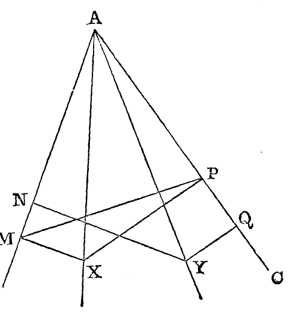
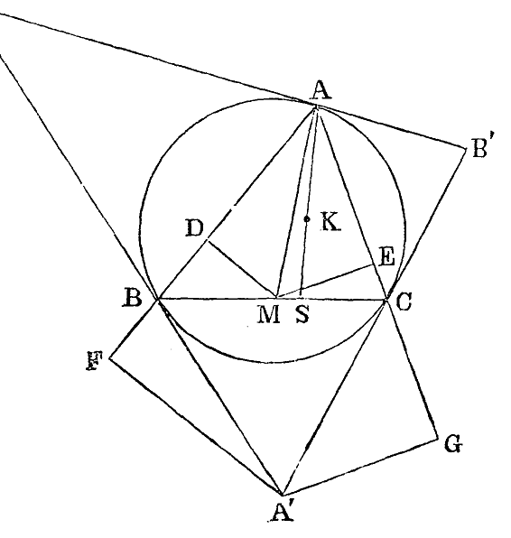

Supplementary Chapter, Section I: Isogonal & Isotomic Conjugates, Antiparallels & Symmedians¶
John Casey — Supplementary Chapter on the Recent Elementary Geometry of the Triangle (5th ed., 1888, pp. 165–173)
f. 0191 · p. 165
SECTION I.¶
THEORY OF ISOGONAL AND ISOTOMIC POINTS, AND OF ANTIPARALLEL AND SYMMEDIAN LINES.¶
Definition (:term:`Isogonal Conjugates <isogonal-conjugates>`). Two straight lines $AX, AY$ are said to be Isogonal Conjugates, with respect to an angle $BAC$, when they make equal angles with its bisector.
Section I, Proposition 1 (Isogonal Pairs & Pedal Circle). If from two points $X, Y$ on two lines $AX, AY$, which are isogonal conjugates with respect to a given angle $BAC$, perpendiculars $XM, YN, XP, YQ$ be drawn to its sides; then—
The rectangle $XM \cdot YN = XP \cdot YQ$.
The points $M, N, P, Q$ are concyclic.
$MP$ is perpendicular to $AY$, and $NQ$ to $AX$.
Six-Point Pedal Circle Theorem (Prop. 2). If three lines drawn from the vertices A, B, C of △ABC concur at a point P, their three isogonal conjugates concur at its isogonal conjugate Q, and the six pedal projections X, Y, Z, X′, Y′, Z′ upon the sides lie upon the common Pedal Circle (Mp X) centered at Mp $= \operatorname{midpoint}(P, Q)$.


f. 0193 · p. 167
Definition (:term:`Isotomic Conjugates <isotomic-conjugates>`). Two points $D, D'$ on side $BC$ equidistant from its midpoint $M_a$ ($BD = D'C$) are called isotomic; by Ceva’s Theorem, if $AD, BE, CF$ concur at $P$, their isotomic cevians $AD', BE', CF'$ concur at the Isotomic Conjugate of $P$ (Prop. 3, f. 0193—for instance, the Gergonne and Nagel points).
f. 0195 · p. 169
Definition (:term:`Antiparallels <antiparallel>`). A transversal cutting $AB$ and $AC$ at $D$ and $E$ so that $\angle ADE = \angle ACB$ and $\angle AED = \angle ABC$ is called antiparallel to $BC$ with respect to $\angle A$. Every antiparallel to $BC$ makes a cyclic quadrilateral $BCED$ with $BC$, and is parallel to the tangent to the circumcircle at $A$ (Euclid III.32).
f. 0196 · p. 170
Theory of Symmedians & Lemoine’s Point $K = X(6)$¶
Definition (:term:`Symmedians <symmedian>`). The isogonal conjugate of a median $AM$ of a triangle is called a Symmedian.
It follows from Prop. 2 that the three symmedians of a triangle are concurrent. The point of concurrence ($K$) is called the symmedian point of the triangle.
Section I, Proposition 5 (:person:`Lemoine’s <lemoine>` Symmedian Point & Perpendiculars). The perpendiculars $x, y, z$ from the symmedian point $K$ on the sides $a, b, c$ of the triangle are proportional to the sides:
$$ \frac{x}{a} = \frac{y}{b} = \frac{z}{c} = \frac{2\Delta}{a^2 + b^2 + c^2}, $$
and among all points in the plane, $K$ strictly minimizes the sum of squares of perpendicular distances to the sides, $x^2 + y^2 + z^2 \ge \frac{4\Delta^2}{a^2 + b^2 + c^2}$.
Dem.—Let the perpendiculars from the median midpoint $M$ on the sides $AB, AC$ be $MD, ME$, and from $K$ on the three sides $x, y, z$. Then (Prop. 1, $1^\circ$) $MD \cdot z = ME \cdot y$; but $MD \cdot AB = ME \cdot AC$ since $M$ bisects $BC$. Hence $y : z :: AC : AB$, and by Lagrange’s identity,
$$ (a^2 + b^2 + c^2)(x^2 + y^2 + z^2) - (ax + by + cz)^2 = (bx - ay)^2 + (cy - bz)^2 + (az - cx)^2 \ge 0. $$
Because $ax + by + cz = 2\Delta$ is constant for every interior point, $x^2 + y^2 + z^2$ attains its unique minimum iff $x : y : z = a : b : c$. Q.E.D.


f. 0199 · p. 173
Concluding Antiparallel Properties of $K$ (Props. 6–8).—Each symmedian $AK$ bisects every antiparallel to $BC$, passes through the circumcircle tangent intersection $A'$ (pole of $BC$), and divides $BC$ internally in the squared ratio of the adjacent sides ($c^2 : b^2$), completing Section I before passing to two figures directly similar.